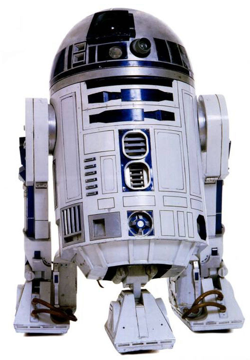

Герои
Энакин Скайуокер (англ. Anakin Skywalker, сокращенно Эни) — легендарный чувствительный к Силе человек, мужчина, который служил Галактической Республике как рыцарь-джедай, позже служивший Галактической Империи и командовавший её войсками, как Лорд ситхов Дарт Вейдер. Рождённый Шми Скайуокер, в юности стал тайным мужем сенатора с Набу, Падме Амидалы Наберри. Он был отцом гранд-мастера Люка Скайуокера, рыцаря-джедая Леи Органы-Соло и дедом Бена Скайуокера. Далёкими потомками Энакина Скайуокера были Нат, Кол и Кейд Скайуокеры. Хотя, будучи взрослым, Энакин стал ключевой фигурой в Галактике, не смотря на низкое происхождение. Первые годы своей жизни он провел на Татуине вместе со своей матерью в качестве раба. В 32 ДБЯ Скайуокер встретился с мастером-джедаем Квай-Гон Джинном и Падме Амидалой, королевой Набу на которой будучи взрослым женился. Вскоре после этого Энакин победил на гонках Бунта Ив Классик, тем самым завоевав свободу у проспорившего хозяина Уотто, и, с трудом и сожалением расставшись с матерью, улетел с Татуина вместе с рыцарем Квай-Гоном. На Набу, несмотря на свой юный возраст, он отважился принять участие в битве против Торговой федерации, что, как ни странно, увенчалось успехом: Энакин уничтожил центр контроля дроидов. Вскоре после этого он вступил в Орден джедаев, став падаваном Оби-Вана Кеноби. Джедаи верили, что Энакин был '«Избранным»', который, согласно пророчеству джедаев, должен был восстановить баланс Силы, уничтожив ситхов. Однако совет сначала не хотел его обучать, так как магистр Йода почувствовал в нём опасность, но рыцарь Оби-ван убедил магистров взять Энакина, несмотря на непригодный для начала обучения возраст и его страх за мать, который мог привести на тёмную сторону.[6] Скайуокер и Кеноби путешествовали вместе на многие задания в последующее десятилетие. В 22 ДБЯ Энакин вновь встретился с Падме Амидалой, экс-королевой Набу, а теперь сенатором от сектора Чоммелль. Ему было дано задание сопровождать и охранять Падме из-за возросшей опасности для неё во время Сепаратистского кризиса. Они оба сражались в битве на Джеонозисе, которая послужила началом Войн клонов. В разгар этих событий Энакин тяжело воспринял смерть его матери от рук тускенских райдеров. Когда Энакин узнал об этом, он отправился в лагерь тускенов, а затем с яростью убил всех, включая женщин и детей. После битвы на Джеонозисе Энакин и Падме тайно поженились вопреки запрету Ордена джедаев на браки.[7] Скайуокер сражался в Войнах клонов плечом к плечу со своим учителем и в 22 ДБЯ стал рыцарем-джедаем, после чего взял в обучение падавана Асоку Тано. На протяжении всего конфликта Энакин прославился своими подвигами, его стали называть «Героем без страха». Скайуокер и Кеноби, хотя больше не были учителем и учеником, продолжали сражаться вместе, получив признание и став грозной парой для Сепаратистов. Несмотря на всё это, Энакин нёс в себе тяжёлое чувство потери, неуравновешенность и гнев. Это стало очевидным после того, как в битве за Корусант он обезглавил безоружного графа Дуку. Затем он узнал, что Падме ждёт ребёнка, и к нему стали являться видения о смерти жены от родов (такие же, как перед смертью его матери). Неспособность контролировать свои эмоции привела Энакина к ужасной смуте: он стал подозревать джедаев, копил всё больше гнева, и вскоре пал на тёмную сторону, посчитав это единственным способом спасти Падме от смерти. Он поклялся в верности своему новому учителю Дарту Сидиусу, ранее известному как Верховный канцлер Палпатин, и стал Дартом Вейдером. Была основана Галактическая Империя, во главе которой встал Палпатин в качестве Императора, после чего Вейдер возглавил атаку на Храм джедаев. Другие джедаи были уничтожены по приказу 66. Менее ста джедаев осталось в живых[источник?], в том числе двое магистров: Гранд-мастер Йода и старый учитель Энакина, Оби-Ван Кеноби. Вскоре Вейдеру пришлось сразиться с ним на огненной планете Мустафар. Несмотря на свои новые тёмные способности, он был побеждён, и, после того, как Оби-Ван отсёк ему ноги и руку, упал прямо рядом с лавовой рекой и загорелся. Кеноби не стал дожидаться смерти бывшего ученика, полагая, что после таких серьёзных ранений он не выживет. Но Дарт Сидиус, чтобы сохранить жизнь Вейдера, заключил его в тёмный костюм жизнеобеспечения, который тому пришлось носить до конца жизни. В это время у Вейдера родились двое детей: Люк и Лея, о существовании которых он не подозревал[8]. Так же стоит заметить, что Падме умерла как раз из-за него. Вернее из-за того, что он перешёл на «Темную сторону». Когда она рожала, доктор сделал весьма не тонкий намёк на это :"Все её показатели в норме, но мы её теряем. Такое чувство, что она не хочет жить". Став лордом ситхов, Вейдер обратился ужасной бедой для джедаев, так как он продолжил их истребление вплоть до 1 ПБЯ. Расширяя власть и владения Императора, Тёмный лорд всё время путешествовал по Галактике для подавления повстанческих выступлений и ареста коррумпированных имперских чиновников. Вейдер планировал произвести впечатление на своего учителя перед его свержением, и для этого нашёл, обучил тёмной стороне и натренировал «секретного» ученика по имени Гален Марек не только для обнаружения и уничтожения оставшихся джедаев, но и для выслеживания и уничтожения врагов Императора. Однако предательство Вейдера позволило Мареку перейти на светлую сторону и пожертвовать собою ради спасения лидеров Альянса за восстановление Республики, что в итоге привело к началу гражданской войны. После этого Вейдер продолжал тренировать учеников, но уже под контролем Сидиуса, в том числе Флинта и будущую леди ситхов Люмию. В 0 ПБЯ первая Звезда Смерти, великое супероружие Империи, было уничтожено молодым пилотом-повстанцем. После этого Вейдер был одержим мыслью о раскрытии личности этого пилота и провел следующие несколько лет в поисках. В итоге он узнал, что этим пилотом был Люк Скайуокер и сделал вывод, что это его сын, родившийся перед смертью Падме. Вейдер продолжал сражаться против повстанцев, втайне планировал обратить сына на тёмную сторону, сделать союзником и с его помощью убить Императора. Вскоре после битвы на Хоте Вейдер сразился со своим сыном и сказал ему, что он его отец, но Люк отказался верить. Дарт Сидиус, однако, знал о планах Вейдера и придумал свой план превращения Люка в нового ученика. В 4 ПБЯ обе стороны сошлись на Эндоре, чтобы решить судьбу галактики. Люк при встрече сдался Вейдеру, надеясь вернуть его на светлую сторону. В тронном зале второй Звезды Смерти Сидиус попытался обратить Люка, используя страх за близких и ярость в дуэли с отцом. Люк победил Вейдера, но поборол в себе тёмную сторону и объявил себя джедаем, таким же, как и отец. Тогда Сидиус решил убить Люка молниями Силы, и в этот момент внутри Энакина пал Дарт Вейдер. Он вернулся на светлую сторону, чтобы спасти своего сына. Он спас его, сбросив Императора в реактор Звезды Смерти II, но сам был смертельно ранен молниями и вскоре после этого умер — однако умер теперь как джедай, искупив свою вину, сохранив сына и выполнив пророчество Избранного.
Чубакка (англ. Chewbacca, сокращённо Чуи) — мужчина, вуки, который был известен, как талантливый пилот и механик. Во времена Галактической Империи Кашиик был порабощен, и Чубакка среди прочих вуки был в качестве раба отправлен на рудники. В это же время в Академии учился Хан Соло, не переносивший рабства. Когда Соло увидел издевательства надсмотрщиков над вуки и, в частности, над Чубаккой, кореллианец не смог вынести этого и спас вуки, за что был выгнан из Академии. Впоследствии Хан Соло стал лучшим другом Чубакки. Чубакка имел перед Ханом «долг жизни». Вместе с Ханом Соло Чубакка пилотировал корабль «Тысячелетний сокол», на котором Люк Скайуокер, Оби-Ван Кеноби и двое дроидов отправились на Альдераан. Чубакка стал ключевой частью плана спасения принцессы Леи, играя роль «пленного пришельца», что позволило Хану и Люку проникнуть в тюремный блок AA-23 на «Звезде Смерти». События на Беспине стали тяжким испытанием для Чубакки. Когда имперские солдаты начали опускать Хана в карбонитовую камеру, вуки с ревом бросился на них. Но сам Хан успокоил его Именно тогда Чубакка, наконец, осознал, что теперь не только лишь один Хан Соло входит в круг членов его семьи. Вместе с Лэндо Калриссианом Чубакка вернулся на Татуин и терпеливо ожидал там Люка Скайуокера, твердо убежденный, что вместе они смогут спасти Хана из лап Джаббы Хатта.
 R2-D2a, Артудиту или Ардвадидва, коротко — R2, Арту или Ардва) — дроид-астромеханик, спутник C-3PO, созданный незадолго до 32 ДБЯ. В помощь своей изобретательности, R2 обладал множеством инструментальных приспособлений, позволявший ему быть превосходным механиком космических кораблей и специалистом по взаимодействию с компьютерами. Легкий дроид, R2 часто бросался в опасные ситуации без раздумий. Эта безумная авантюрность часто спасала его спутников в многочисленных приключениях, часто изменявших ход истории Галактики. R2 имел бочкообразную форму тела, на котором расположен вращающийся купол, исполняющим роль его головы и включающим единственный сенсор-глаз. Он имел три подпорки с колесами, которые позволяют ему ходить или ездить. В отличие от его приятеля, протокольного дроида C-3PO , R2-D2 не разговаривал, а общался через последовательности писков, свистов и трелей, которые Трипио мог переводить. Похоже на то, что его хозяева также понимали, что он хотел сказать.
C-3PO (Золотник, Си-Трипио, сокращенно − Трипио) — протокольный дроид, свидетель и участник многих исторических событий. Собранный на Татуине Энакином Скайуокером, Трипио долгое время служил сначала самому Энакину, а затем его сыну, Люку Скайуокеру. Считался божеством на Лесистом спутнике Эндора и Алине (эвоков и алинов). C-3PO обычно можно встретить с его давним приятелем R2-D2, маленьким и шустрым дроидом-астромехаником. Его основная функция как протокольного дроида — консультировать в этикете и помогать в переводе, чтобы встречи разных цивилизаций проходили гладко. Его модуль TranLang III, объединенный с AA-1 VerboBrain, позволяет ему свободно владеть шестью миллионами форм связи. C-3PO также содержит множество древних деталей, взятых Энакином Скайуокером из утиля Уотто для создания дроида. Крайне преданный своим владельцам (согласно программе), с момента своего создания он служил более чем сорока существам, среди которых Энакин Скайуокер, Шми Скайуокер, Клигг Ларс, Падме Амидала, Рэймус Антиллес, Лея Органа, Оуэн Ларс, Люк Скайуокер. Джабба Десилиджик Тиуре, более известный как Джабба Хатт, некоторое время также был «владельцем» С-3PO, но это была только часть плана по тайной доставке R2-D2 и светового меча Люка Скайуокера во дворец Джаббы, и, вероятно, его не стоит считать полноправным владельцем 3PO